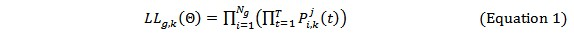
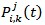
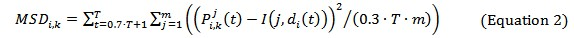

Reinforcement learning in information searching
Yonghua Cen
Department of Information Management, School of Economics and Management, Nanjing University of Science and Technology, Jiangsu, 210094, China and Advanced Analytics Institute, University of Technology Sydney, PO Box 123, Broadway, NSW, 2007, Australia
Liren Gan and Chen Bai
Department of Information Management, School of Economics and Management, Nanjing University of Science and Technology, Jiangsu, 210094, China
Introduction
The present study is designed to investigate how university students learn to use the search functions provided by scholarly databases and adjust their searching strategies without instructions. The focus of this research is on learning of information searching skills in practice. Here information searching means 'a potential sub-stage in the information-seeking process' (Wilson 1999: 258) and 'the micro-level of behaviour employed by the searcher in interacting with information systems' (Wilson 2000: 49).
Since Belkin in the 1980s, information science has attempted to bring its information seeking perspective into information search (e.g., Bates 2002; Belkin et al. 1996; Ingwersen 1996; Saracevic 1996; Sutcliffe et al. 2000; Spink 1997; Spink et al. 2002a; Spink et al. 2002b; Wilson 1999, Wilson 2000; Wilson et al. 2002). However, pertinent literature bridging learning and information searching sheds more lights on learning of knowledge by searching (Colvin and Keene 2004; Ford et al. 2003; Laxman 2010; Marchionini 2006; Puustinen and Rouet 2009; Zhu et al. 2011), rather than learning of searching by practice. By learning of knowledge by searching, we mean that users acquire knowledge for sense-making or problem-solving purposes through information searching, while learning of searching by practice refers to that users improve the level of search skills through practising searches. Several longitudinal studies (Chu and Law 2007; Vakkari 2001; Warwick et al. 2009) examined users' experiences of academic information seeking and the development of their search expertise. However, few attempts have been made to disclose the behavioural evolution and cognitive dynamics during users' self-regulated learning of search skills by trial and error.
In this study, it is assumed that there is an autonomous reinforcement learning process during academic users' information searching and that different users demonstrate different reinforcement patterns of learning. Specifically, mathematical reinforcement learning models are brought in to fit the data from user experiments. By model fitting and analysis, this study aims to discover the characteristics of users' searching behaviour, and the learning mechanisms controlling users' adjustments of search strategies.
The rest of the paper proceeds as follows: related research is reviewed; then the research questions and assumptions are proposed, followed by the description of the quasi-experiment approach employed in this study, and the process of model estimation and validation; the results and discussion are presented and concluded afterwards; finally, implications and further research are discussed.
Literature review
Learning in information searching
Learning of searching by practice versus learning of knowledge by searching
As commented by Jansen et al. (2009), in many studies concerning information seeking behaviour, the learning aspect is assimilated into other frameworks, such as sense-making and problem-solving (Brand-Gruwel et al. 2009; Eisenberg and Berkowitz 1990; Kuhlthau 1993; Savolainen 1993). Most of the research linking information seeking or searching with learning emphasizes learning of knowledge by searching (Colvin and Keene 2004; Ford et al. 2003; Laxman 2010; Marchionini 2006; Puustinen and Rouet 2009; Zhu et al. 2011), rather than learning of searching by practice, although there are commonalities between these two kinds of learning process. Nevertheless, from previous studies, learning as a means to develop searching skills can still be found. For example, some studies underline users' learning and understanding of search tasks, information needs (Cole et al. 2007; Kelly and Fu 2007), and search strategies (Halttunen 2003; He et al. 2008; Saito and Miwa 2007). Cole et al. (2007) conducted a field study to examine how domain novices learned to represent the topic spaces of the search tasks. Kelly and Fu (2007) employed online elicitation forms to collect users' descriptions of the search topics. The forms were distributed to users in later experiments, and significantly helped them formulate better queries. Saito and Miwa (2007) carried out controlled experiments to evaluate the educational potentials of a deliberately constructed search-process feedback system in facilitating reflective activities for online searching. Their findings confirm that the performance of the participants supported by the feedback system improved substantially. He et al. (2008) examined the effects of two different training approaches, referred to as conceptual description and search practice, on users' learning and understanding of using a case-based reasoning retrieval system. Halttunen (2003) investigated students' interpretations of information retrieval know-how and summarized the principles of designing constructive learning environments for information retrieval.
Learning process
Studies regarding the process of users' learning of searching expertise can be classified into two categories: self-regulated learning (Jansen et al. 2009; Kuhlthau 1993; Xie 2000; Xie 2007) and instruction-assisted learning (Cole et al. 2007; Gerjets and Hellenthal-Schorr 2008; Halttunen 2003; Kelly and Fu 2007; Kuhlthau et al. 2007; Saito and Miwa 2007). Besides, in the view that learning of searching expertise is a dynamic process, researchers (Chu and Law 2007; Vakkari 2001; Warwick et al. 2009) conducted longitudinal investigations to track the change of users' searching expertise over time.
By self-regulated learning, we mean that users finish searching all by themselves, without guides from others or systems. Grounded in the constructivist view of learning, Kuhlthau (1993) presented a six-stage model of information search process: initiation, selection, exploration, formulation, collection and presentation. The whole process involves 'the total person incorporating thinking, feeling and acting in the dynamic process of learning' (Kuhlthau 1993: 348) , in which users move from uncertainty to understanding. Xie (2000; 2007) investigated how the interplay between plans and situations lead to users' shifts of strategies and interactive intentions within an information seeking session. The twofold shifts in Xie's study are essentially the results of users' self-assisted reflective learning. However, in existing research, the learning process in information seeking is aimed at problem solving, rather than search skill acquiring. In response to this, Jansen et al. (2009: 643) called for a learning theory, which 'may better describe the information searching process than more commonly used paradigms of decision making or problem solving'. Their research indicates that different learning levels relate to particular searching characteristics. The results partially support that searching episodes are learning events.
In recent years, instruction-assisted learning including social learning and training-based learning has been much stressed and the influences of external intervention on users' learning extensively analysed. Kuhlthau et al. (2007) elaborated guided inquiry as 'a dynamic, innovative way of developing information literacy'. Cole et al. (2007) claimed that instructive intervention helps novices bridge the gap between their mental models and the thesaurus's hierarchical syndetic representation of the search topic. According to studies of Kelly and Fu (2007) and Saito and Miwa (2007), when provided with analogous information, such as keyword description of similar search topics and information about other participants' search process, participants greatly improve their search effectiveness. Halttunen (2003) maintained that information retrieval instruction should be integrated with constructive learning. Attempting to design constructive learning environments, Halttunen summarized five different aspects of participants' interpretations of information retrieval, and examined their relationship with learning styles and academic backgrounds. Gerjets and Hellenthal-Schorr (2008) proposed a user-oriented Web training based on a conceptual decomposition of the sub-competencies of media literacy and the sub-processes of information retrieval, and a task analysis of information problems. Their study shows this training approach is more beneficial to develop high school students' declarative knowledge of the Web and facilitate their searching, than conventional technique-oriented trainings.
Taking a long-term view, Chu and Law (2007) investigated twelve postgraduate students' growing understanding of searching skills over a one-year period. They collected data from surveys, interviews, students' search statements and think-aloud protocols. Their findings reveal that, in the beginning, students conducted more questionable subject searches, with little attention paid to keyword searching; later, as they learn more about the capabilities of keyword searching, they prefer keyword searching to subject searching, and at the same time they proceed from simple keyword searches to more complex keyword searches. Vakkari (2001) observed eleven master's students' information searching processes during a period of four months when they were preparing their research proposals. The research corroborates that students' exhibited searching characteristics (including information needs, search tactics, term choices, relevance evaluation and use of obtained information) which correlate highly to their problem-solving stage and their mental model. Based on a two-year investigation of the growth of information seeking skills in a group of undergraduate students, Warwick et al. (2009) found that the demands of students' undertakings act as the major factor leading to the progress of their information seeking; students follow the law of minimum effort to retain established information-seeking strategies or seek new methods. Whereas studies by Chu and Law (2007) and Vakkari (2001) provide little evidence on how users acquire the knowledge, research done by Warwick et al. (2009) draws a more detailed picture of users' development of searching expertise.
Influencing factors
Besides measuring the impacts of external instructions, the majority of previous work concerning learning behaviour in information searching highlights the influences on users' learning process of users' personalities (including individual experience, knowledge, cognitive style, learning style, and so on) (Bilal and Kirby 2002; Jansen et al. 2009; Tabatabai and Shore 2005; Tenopir et al. 2008; Thatcher 2008; Wildemuth 2004; Zhang 2008), task complexity (which is associated with users' familiarity with the search task) (Jansen et al. 2009; Kim 2002; Zhang 2008) or system characteristics (Wilson et al. 2009).
For instance, using comparative studies, Bilal and Kirby (2002), Tabatabai and Shore (2005) and Thatcher (2008) reported that users with different knowledge backgrounds or cognitive capacity (such as novices and experts, children and adults) exhibit different behavioural characteristics in information searching. Wildemuth (2004) conjectured that domain knowledge affects the adjustments of search tactics: insufficient domain knowledge is accompanied with awkward concept representations and erroneous reformulations of search patterns. Zhang (2008) explored the effects of mental models on undergraduate students' online searching. The researcher concluded from experimental studies that students' familiarity with the task significantly influences their ways to initiate interaction, query constructions, and search tactics. Recently, Jansen et al. (2009) examined the learning characteristics of users with different cognitive levels in completing search tasks of different complexities. Their study substantiates the differences in exhibited searching characteristics among users of different learning styles. Tenopir et al. (2008) examined the affective and cognitive dimensions of searching behaviour and included learning styles as an influencing factor. They administered 41 participants into experiments and used audio/video devices to capture and record their interactions with ScienceDirect. The researchers reported the associations between engineering graduate students' learning styles (converging vs. assimilating) and the characteristics of their search sessions. Kim (2002) confirmed that cognitive style (field dependence vs. field independence), search experience (novice vs. experienced searchers), and task type (known-item vs. subject search tasks) are variables impacting users' search performance and navigational style on the Web. Wilson et al. (2009) quantified the strengths and weaknesses of three advanced search interfaces in scaffolding user-system interactions by integrating existing research models of users, needs, and behaviour.
In summary, prior research has attempted to connect information searching with learning; however, limited efforts have been made to model the underlying process of users' learning in information searching. This is preliminarily examined in our work.
Reinforcement learning models
Humans share with other animals a simple way of learning, which is usually called reinforcement learning. This reinforcement learning seems to be biologically inherent. If an action leads to a disadvantageous outcome (also refers to a negative payoff or punishment), this action will be avoided in the future; otherwise, if an action leads to a favourable outcome (a positive payoff or reward), it will reoccur (Brenner 2006; Sutton and Barto 1998). Here, the word action can also be understood as strategy.
In the spirit of reinforcement learning, a variety of reinforcement learning models have been established in psychology, economics and computer science to quantitatively analyse different learning behaviour in different contexts (Börgers and Sarin 2000; Bush and Mosteller 1953; Cross 1973; Erev and Roth 1996; Fu and Anderson 2006; Izquierdo et al. 2007; Roth and Erev 1995; Shimokawa et al. 2009). Among them, Bush and Mosteller's model (Bush and Mosteller 1953), Cross's model (Cross 1973), Börgers and Sarin's model (Börgers and Sarin 2000) and Roth and Erev's two models (Roth and Erev 1995; Erev and Roth 1996) can be regarded as the five most typical ones, and are employed to fit the experimental data in our study. These models are briefly compared in Table 1. More detailed mathematical descriptions regarding these models can be found in the Appendix.
| Model | Mechanism by which payoffs affect strategy adjustments | Measure of the extent to which payoffs affect strategy adjustments | Basic ideas |
|---|---|---|---|
| Bush and Mosteller's model | Payoff of the last strategy adoption | A fixed constant | When a certain strategy leads to a positive payoff, the probability of this strategy being chosen again increases and the probability of it being avoided decreases. Otherwise, the probability of the strategy being further adopted decreases and the probability of it being avoided increases. |
| Börgers and Sarin's model | Difference between the actual payoff and the expected one | If the actual payoff of a strategy exceeds the expectation, the probability of this strategy being further selected increases; if the payoff is smaller than the expectation, the probability of the strategy being further adopted decreases. | |
| Cross's model | A monotonic function of the payoff | The attraction of a strategy is defined as a linear function of the payoff, by configuring the reinforcement strength as a variable correlated to the payoff. | |
| Roth and Erev's model | Accumulated effects of all the previous strategy adoptions | Accumulated payoff from adopting a strategy | Decision makers choose a strategy based on their experiential expectations for all strategies. These expectations result from the accumulated effect of their past strategy adoptions, not only the last one. |
| Roth and Erev's modified model | Accumulated payoff from adopting a strategy (taking forgetting, subjective cognition and neighbour strategies into account) | A forgetting parameter is incorporated into the basic model of Roth and Erev to measure the attenuation degree of users' experiences influencing their strategy selections. A transferring parameter is added to determine the extent of the reinforcement strength being transferred to the unemployed strategies. At the same time, different individuals make different subjective evaluations to a strategy even when the payoffs from applying the strategy are equal. |
The process of information searching is also a process of decision-making or action-taking (Du and Spink 2011; Kuhlthau 1993; Savolainen 1993). Users exhibit similar reinforcement learning characteristics in this process. Reinforcement learning models can be adopted or revised to disclose the mechanisms dominating users' learning of searching knowledge. This is further studied in our research.
Research questions and assumptions
Research questions
The focus of this study is on learning of searching by practice, instead of learning of knowledge by searching. It also concerns the effects of personal traits (e.g., information seeking experience and academic backgrounds) on users' learning of search strategies in information searching. However, it is not to provide evidence for or against these effects by qualitative or quantitative analysis of data gathered from experiments, questionnaires, interviews or observations. Rather, this study brings in several reinforcement learning models to examine the micro process of users' self-regulated learning of search expertise by trial and error. It aims at mining the mechanisms underlying users' behaviour adjustments and discovering their learning characteristics and cognitive dynamics during information searching.
The specific research questions are as follows:
- How do university students learn to use correct strategies to conduct scholarly information searches without instructions? In other words, are there learning rules controlling their strategy adjustments during searching? If so what are the rules?
- What are the differences in learning mechanisms between users at different cognitive levels?
Assumptions
The research question design, experiment design, model application and explanation in this study are founded on the following assumptions:
(1) In the process of self-regulated learning of searching expertise, users demonstrate reinforcement characteristics.
When a user completes a search task by a certain strategy, the user may evaluate this process in terms of time cost, quantity of relevant results, and so on. Depending on this evaluation, the user will form a tendency to retain this strategy or reject it by switching to other strategies for next tasks. In other words, users adjust their behaviour by referring to their experience in database using and based on their knowledge about the available strategies. This process of dynamic alignment tallies with the core conception of reinforcement learning (Sutton and Barto 1998). Figure 1 describes this process of strategy reformulation.
The above process of reinforcement learning and search strategy adjustments is also consistent with the information search process proposed by Ellis (1989) and Wilson (1997), in which a user first defines information needs, and then formulates or selects a search strategy, performs searching or browsing, obtains and evaluates the search results.
(2) Users at different cognitive levels demonstrate different reinforcement patterns.
It is assumed that users' personal traits have impacts on their information behaviour, and there are differences in the reinforcement characteristics between different users during their learning of searching expertise. This assumption is justified in the present study by introducing different reinforcement learning models to fit the experimental data collected from different user groups, and evaluating the applicability of the models to the data.
Research design
Overview
A quasi-experiment approach was designed according to the requirements of data analysis and model inference and fitting. Two groups of undergraduates at different cognitive levels participated in the experiments in January 2009. They were asked to execute set search tasks in a specified academic database system independently. The process of their strategy adjustments by trial and error was observed and recorded by questionnaires and a screen-tracking software. The gathered experimental data were quantitatively fitted by different reinforcement learning models. The fitness of the models to the data was checked and the best model to explain the learning behaviour of users in each group was chosen. By doing this, the dynamic learning mechanisms behind users' explicit strategy formulations were analysed and the differences in learning characteristics between different user groups were examined.
Participants
In the first experiment, thirteen first-year undergraduate students (freshmen) who had little knowledge of academic information searching were organised into our laboratory, while in the second experiment, thirty-four fourth-year undergraduate students (seniors) who did have experience of academic information seeking were administered together. All students had experience of using Google or Baidu (a well-known local search engine in China).
It is supposed that there are discrepancies in the level of cognitive processing between freshmen and senior students, considering the differences in their information seeking experience, knowledge and capability of comprehension, application, analysis, synthesis and evaluation (Bloom et al. 1956). The cognitive level of participants is the independent variable in this study. It is assumed to affect the dependent variable, i.e., users' reinforcement learning behaviour.
Experiment settings
All participants were required to log in the search page of CNKI, a well-known scholarly database system in China, and perform ten different search tasks without extra instructions.
The same search tasks were assigned to all participants. These tasks were designed before the experiments by the researchers. The tasks relate to different subjects. A task form giving descriptions for each task was handed out to participants before they started the tasks. The descriptions include the task title and several keywords associated with the task topic, which removed the chance participants would misunderstand the task.
For each task, the researchers had done a test search in the database system beforehand, and labelled all the relevant search results. These results served as standard ones. Once participants finished a task, the standard results were presented to them to check the correctness of their search performances.
A questionnaire was devised to solicit the perceptions of a participant with regard to the formulated search strategy for each task. The perceptions include:
- The description of the search strategy, including the search function, the keywords, the way the keywords were input, and additional details;
- The participant's expectation of the strategy bringing desired results;
- The satisfaction of the participant with the strategy after applying it and comparing the results with the standard ones.
An incentive mechanism was designed to avoid the possible insufficiency of users' motivation to complete the tasks: those who got better search results would be rewarded with delicate and attractive presents.
Besides, participants were told by the researchers that for each task:
- All keywords that represent the task topic must occur in each title of the search results. To this end, participants must learn to use multiple search boxes and logical AND connector, so that they could input each keyword in each box and formulate a correct query to fulfil the task.
- Search results totally consistent with the standard results would be considered satisfactory, and presents would be awarded to those who reached the satisfactory results.
The participants' interactions with the database system were recorded by a screen-tracking software to provide extra information for data analysis.
The above experimental design provides a quasi-experiment approach. The variables such as experimental environments, search tasks, information need understanding, and external stimulations were controlled to be consistent between each participant. As for information need understanding, it was not necessary for participants to figure out what keywords should be used for each task, since standard keywords were offered in the task form. With respect to external stimulations, there was no instruction supplied to participants, and the same incentive mechanism was applied to each of them.
By controlling the above interventions, the effects of factors other than participants' cognitive levels were excluded from the experiments to the maximum extent practicable, and therefore the process of participants' strategy adjustments in performing the search tasks could be more accurately observed.
Search strategies
In relation to search strategies, Bates (1979) defined twenty-nine tactics in four categories: monitoring, file structure, search formulation and term. In Bates's model, search formulation tactics are the moves that searchers make to design or redesign search formulation, while term tactics are the actions searchers take in selecting and revising terms within the search formulation. Likewise, Belkin et al. (1996) proposed a classification scheme of search strategies. In Belkin's taxonomy, strategies encompass term strategies, database strategies, interaction strategies, and search strategies. Search strategies or tactics in these studies are conceptualised to describe the possible actions a user can take from initiating a search task to concluding it.
In the present research, a search strategy refers to the action that a participant takes to carry out a search task, by selecting one of the search functions offered by the search system and formulating a search query. The optional search functions include the basic search, the advanced search and the expert search. To facilitate model inference and fitting, the search strategies that a participant could apply to construct a query were categorised into three types:
- The first type, the simple-search strategy, refers to when a participant inputs all the keywords in a single textbox either in the basic search page or the advanced page. Since in the experiment system, those input keywords without any Boolean operator are processed according to default 'OR' logic, this strategy may incur much irrelevant feedback. In other words, the search results may be of high recall but of low accuracy.
- The second type, the unsuccessful multiple-textbox strategy, refers to when a participant selects the advanced search, inputs keywords in multiple textboxes as per one word in one box, but does not specify any Boolean operator to logically connect the keywords. In the same way to the simple-search strategy, the system processes the keywords under 'OR' logic, and the user may not get the exact feedback up to the standard results. However, from the perspective of learning, when participants apply this strategy, they somewhat get the conception of the advanced search, which is supposed more effective than the simple search.
- The third type, the logic-AND-search strategy, is the target strategy for the experiments in our study. When applying this strategy, a participant selects the advanced search, inputs keywords in multiple textboxes with one word in one box, and uses 'AND' operators to organise the keywords into a meaningful query. If all the required keywords associated with a search task are input, this strategy is expected to lead to correct search results.
From the collected experimental data, it was found that no student ever made attempts at the expert search.
Procedure
Given a search task, a participant was asked to carry out the following process:
- Understand the task by examining the required keywords listed in the task form;
- Figure out a strategy, including the search function and the keyword inputting scheme;
- Depict the search strategy on the questionnaire;
- Write down an expectation score (i.e., the participant's confidence of the strategy bringing desired results) on the questionnaire;
- Execute the search (namely apply the formulated strategy);
- Evaluate the search results by comparing them with the standard results presented by the organisers;
- Write down a satisfaction score on the questionnaire;
- Continue the next search task until all tasks are completed.
Each participant's learning process was observed by tracking their strategy adjustments in executing all the search tasks in sequence.
Data analysis
For each of the two student groups, the collected experimental data were divided into two parts: (1) The first 70% of the data (associated with the first seven search tasks) were used to infer the parameters of each model; (2) The remaining 30% (regarding the last three tasks) were fitted by the estimated models. The model best fitting the data was used to explain the learning behaviour of the users in the corresponding group.
Estimation of model parameters
The maximum likelihood method was used to estimate the parameters of each model with regard to the experiment data of each group. The likelihood function for the g-th group and k-th model is defined as:
where T denotes the parameters, T=7 is the number of training tasks, and Ng is the number of participants in group g.  stands for the attraction of strategy j adopted by user i for task t, and is computed under the updating rules of model k.
Table 2 details the parameter estimates.
| Student Group | Bush and Mosteller's model | Börgers and Sarin's model | Cross's model | Roth and Erev's modified model |
|---|---|---|---|---|
| Freshmen | aBM=0.2; ßBM=0.1 | ßBS=0.100 | aCR=0.1; ßCR=0.1 | f=0; e=0.3428 |
| Seniors | aBM=0.1; ßBM=0.1 | ßBS=0.258 | aCR=0.1; ßCR=0.4 | f=0.4; e=0.2407 |
Note there is no parameter in Roth and Erev's basic model. The parameter Xmin in Roth and Erev's modified model can be directly derived from questionnaire data. It is the minimum expectation per participant for all strategies.
Model fitting and verification
The final models were obtained by replacing the parameters with the estimates. The models were then applied to the experimental data associated with the last three search tasks: given a participant and a task, the probabilities of the participant choosing different search strategies were computed, and the strategy with the maximum probability was ticked as the predicted strategy. This process is referred to as model fitting, or in this study, strategy simulation.
The effectiveness of model fitting was evaluated by measuring the difference between the simulated strategies derived from each model and the actual strategies that participants took. This difference was gauged by the mean squared distance in the present study. The mean squared distance for the i-th participant and the k-th model is computed as follows:
where T=10 is the total number of search tasks, m denotes the size of strategy set, is the probability of participant i taking strategy j to fulfil task t predicted by model k, di(t) denotes the actual strategy chosen by participant i in period t, and I(j,di(t)) is a contingent decision function whose value is 0 when j?di(t) or 1 when j=di(t).
Table 3 reports the mean and standard deviation of the mean squared distances with regard to each student group and each model.
| Mean and standard deviation of the mean squared distances per student group per model | Bush and Mosteller's model | Cross's model | Börgers and Sarin's model | Roth and Erev's model | Roth and Erev's modified model | |
|---|---|---|---|---|---|---|
| Freshmen students | Mean | 0.05278 | 0.004631 | 0.022475 | 0.024239 | 0.016259 |
| Standard deviation | 0.013887 | 0.001122 | 0.010654 | 0.006058 | 0.002018 | |
| Senior students | Mean | 0.017591 | 0.009455 | 0.034181 | 0.006506 | 0.006587 |
| Standard deviation | 0.006063 | 0.019643 | 0.150697 | 0.002358 | 0.001466 | |
For each group of students, the model with the smallest mean and standard deviation was chosen as the optimal model to fit their behaviour data. Consequently, based on data in Table 3, for freshmen, Cross's model fits best, while for seniors, Roth and Erev's modified model is the best.
Results
Freshmen's learning: Cross's model
From the data in Table 3, it can be inferred that freshmen's search strategy adjustments comply more with Cross's model.
(1) Freshmen showed insistence and inertia towards earlier strategy preferences.
According to the updating rules of strategy attraction in Cross's model (Equations 8 and 9, see Appendix), freshmen (first year students) are more inclined to continue the search strategies employed in their last task.
Table 4 presents the statistics of users' behaviour obtained from the experiment data. It can be seen that freshmen were more likely to choose the simple search as the initial strategy and input keywords in a single search box. They did so based on their former experience of general search engine using.
| Indicators | Freshmen Students | Senior Students |
|---|---|---|
| Percentage of users with the initial strategy being the simple search | 92.31 | 82.35 |
| Average tasks after which users switched to the advanced search page | 5.62 | 4.44 |
| Average tasks after which users started to use the logic-AND-search strategy | 7.61 | 5.74 |
The average tasks after which users first switched to the advanced search page and the average tasks after which users started the logic-AND-search are also reported in Table 4. The results tell that freshmen took more time to leave the simple search, learn to use new search functions and take new strategies. Their behaviour followed a Markov process, and they were somewhat insistent to their earlier strategy preferences.
(2) Freshmen could finally give up experiential preferences and comprehend new strategies by learning.
The parameter estimates of Cross's model for freshmen are: aCR=0.1; ßCR=0.1 (see Table 2). It implies that freshmen held insistence and inertia to the established strategies, but the extent was not so remarkable. As shown in Table 4, averagely after 6 to 8 tasks, freshmen gave up their preference of the simple search. They learned to use the advanced search and took the logic-AND-search strategy through trial and error. Most freshmen finally found out and used the logic-AND-search strategy, which was more possible to bring search results consistent with the standard ones.
Seniors' learning: Roth and Erev's modified model
The data in Table 3 indicate that for seniors (final year students), Roth and Erev's modified model is more ideal to fit their learning behaviour. They depended on their past experiences to align search strategies. At the same time, they developed strategies through rational thinking.
(1) Seniors were ready to make comprehensive decisions based on recent experiences.
The estimate of the forgetting parameter f in Roth and Erev's modified model for seniors is 0.4 (see Table 2). According to Equation 12-15, this means, to a non-negligible extent, seniors would like to make comprehensive decisions based on their recent experiences. Basically, the more recently a search experience happens, the greater impact it has on the current decision making.
(2) Seniors showed strong subjectivity when evaluating the feedback from adopting a certain strategy.
According to Equation 14 (see Appendix), R(p(t))=p(t)-Xmin , when making decisions, seniors demonstrated strong cognitive subjectivity. Different seniors might make different evaluations towards equal strategy payoffs.
Figures 2 and 3 depict the perceptions of the students who adopted the logic-AND-search strategy. Figure 2 portrays the average expectation per task of the freshmen and the seniors. Figure 3 illustrates the changes of their satisfactions. It can be inferred that, the freshmen held high expectations before applying the logic-AND-search strategy, and consistently scored high satisfactions with the feedback. In contrast, the seniors' expectations and satisfactions in different tasks were quite unsteady, and were almost lower than those of the freshmen.
Figure 2: Average expectation per task of those students who adopted the logic-AND-search strategy
Figure 3: Average satisfaction per task of those students who adopted the logic-AND-search strategy
(3) Seniors paid attention to neighbour strategies.
The estimate of the transferring parameter e in Roth and Erev's modified model for seniors is 0.2407 (see Table 2). According to Equation 12-13, this means when adjusting their strategy, seniors were not completely affected by the information of the strategy adopted in the last search, but also concerned about the unemployed strategies. The strength of the unemployed strategies influencing their current strategy selection is 24.07%. In other words, seniors paid attention to neighbouring strategies.
Figure 4 describes the percentages of students who adopted the unsuccessful multiple-textbox strategy in each task. Figure 5 presents the percentages of students who correctly tried the logic-AND-search in each task. Interestingly, more seniors used logic-AND-search in the fourth task than in the fifth task. Correspondingly, fewer seniors took the unsuccessful multiple-textbox strategy in the fourth task than in the fifth task. That means some of the seniors who chose the correct strategy in one task returned to incorrect strategies in later tasks. This kind of phenomenon occurs several times (see Figures 4 and 5). After tracing back to the screen videos, the researchers found that a few seniors who had successfully employed the logic-AND-search started to explore other search options such as document type, year range, and so on. These options probably confused them and made them fail to use logic AND operators in subsequent tasks. Undoubtedly, those seniors displayed strong characteristics of rational thinking. This point is exactly what Roth and Erev's models try to reveal.
Figure 4: Percentages of students who followed the unsuccessful multiple textbox strategy
Figure 5: Percentages of students who adopted the logic-AND-search strategy
Summary
The above findings give substantial answers to the research questions, and confirm the theoretical assumptions.
-
Question: How do users learn to use correct strategies to conduct scholarly information searches without instructions? In other words, are there learning rules controlling their strategy adjustments? If so what are the rules?
Answer: In a scheme of things, users demonstrated reinforcement learning characteristics. The strategies that brought success in their earlier experiences would be repeated with a higher probability. Through learning by trial and error, both freshmen and seniors could finally comprehend new search strategies. Answer to this question justifies the first assumption of this study.
-
Question: What are the differences in learning mechanisms between users at different cognitive levels?
Answer: Users at different cognitive levels demonstrated different reinforcement patterns. The learning behaviour of freshmen showed remarkable Markov properties. Their strategy selection was determined by the feedback obtained in the last search activity. Cross's model better explains their learning mechanisms. For seniors, their strategy selection depended on the accumulated effect of past strategy adoptions. They displayed strong characteristics of rational thinking. Roth and Erev's modified model better describes their learning behaviour. Answer to this question substantiates the second research assumption.
Discussion
Characteristics of reinforcement learning
It was found that most undergraduates preferred to repeat the strategies that bring success in their earlier experiences. This is highly consistent with the findings of Warwick et al. (2009: 2402) that undergraduate students
used their growing expertise to justify a conservative information strategy, retaining established strategies as far as possible and completing tasks with minimum information-seeking effort.
Specifically, according to this study, in the first task, 85% of undergraduates (92.3% of freshmen and 82.4% of seniors, See Table 4) chose the simple search as the initial strategy. It was supposed that the studied students were influenced by their former experience of general search engine using (Du and Evans 2011; Fast and Campbell 2004; George et al. 2006; Haglund and Olsson 2008; Malliari et al. 2011).
There were differences in the reinforcement learning process between freshmen and seniors, as previously claimed. Freshmen can be considered to be novices with little perception of scholarly information seeking, while seniors are users with more expertise. From this point of view, the differences in the reinforcement learning patterns between freshmen and seniors can be expanded by findings of Warwick et al. (2009: 2413), as follows:
Reflection on the learning theories of Kolb (1984) ... learners will often resist acquiring new skills because rejecting existing skill causes negative emotions (e.g., confusion, anger, upset). Existing skill is guarded zealously and adapted repeatedly until it finally fails ... Expert searchers therefore are not only differentiated by their existing skills but also potentially by their attitude to acquiring new ones.
Warwick et al. grounded the above point by referring to Kolb's (1984) learning theories, which are congruous with the assumptions of this study.
Effectiveness of reinforcement learning
Consider the average number of tasks it took participants to change from the simple search to the advanced search and start the logic-AND-search (See Table 4). It can be concluded that the learning effectiveness of academic users through self-regulated trial and error was not so satisfying. Especially, freshmen spent more time to learn the correct search strategy; the average tasks it took them to use the logic-AND-search were 7.61 out of 10. This highlights the necessity of external instructions to improve the effectiveness of user's learning of information seeking, especially for novices. Although this declaration should be further justified, the researchers are still positive with it by referring to other studies (Colvin and Keene 2004; Halttunen and Jarvelin 2005; Ren 2000).
Besides, seniors learned the correct search strategy more quickly than freshmen, as described in Table 4. This is in agreement with the studies of Chen (2009), Eshet-Alkalai and Chajut (2009), Hsieh-Yee (1993), Korobili et al. (2011), and Thatcher (2008). Specifically, this study to some extent confirmed the findings of the recent work done by Korobili et al. (2011), that there are statistical significant relationships between users' experience in databases or e-journals and the variables: more than one keyword, Boolean operators as search techniques, change strategy, different keywords as techniques to modify the initial strategy, and so on.
Conclusions and implications
The study observed the strategy adjustments of thirteen first-year undergraduates and thirty-four fourth-year undergraduates in carrying out ten search tasks in a specified database system independently. It was assumed that there are discrepancies in the level of cognitive processing between the two groups of users. The impacts of cognitive levels on learning of searching skills were examined by excluding the effects of other factors through quasi-experimental settings. When executing a search task, a user was asked to write down: (1) the description of the formulated search strategy; (2) the expectation of the strategy bringing desired results; and (3) the satisfaction with the strategy. The dynamics of search strategies, expectations and satisfactions of each user across different tasks were simulated through five reinforcement learning models. These dynamics were supposed to be the outcomes of participants' learning and reflection.
It is found that undergraduates prefer to retain established strategies. It takes them a long time to change from the simple search to the advanced search and learn to use the most effective strategy. Generally, in the process of searching expertise learning, users demonstrate reinforcement characteristics. If a search strategy leads to satisfactory results, this strategy will be more likely to be repeated with high expectation later; if a strategy leads to unsatisfactory results, it will be more likely to be avoided afterwards. Specifically, users at different cognitive levels demonstrate different reinforcement patterns. Freshmen's strategy selection is always made according to the feedback obtained in the last search activity, whereas seniors rely on their search experiences and rational thinking to make comprehensive decisions.
Through observing and quantitatively simulating the micro process of academic users' learning of searching expertise, the current research enhances our understanding of users' experience of scholarly information seeking. Besides, based on the research outcomes and discussion, implications can be proposed from the perspectives of training programme design, adaptive information retrieval system design and theoretical development.
As formerly discussed, learning through self-regulated trials is not the most effective and economic way for academic users to develop searching expertise. Extra instructions are needed to improve their learning performance. Instructions can be imparted through training curriculums offered by librarians, as well as online learning or help features incorporated into information retrieval systems. Rather than just a 'list of skills' of information literacy (Maybee 2006), the instructions should be tailored to the learning patterns of different users. This deserves further investigation by librarians.
By monitoring users' searching behaviour and identifying users' learning characteristics, information retrieval systems can offer personalised supports to suit the users and their search tasks, and assist them to complete the tasks, as suggested by Li and Belkin (2008), Stelmaszewska et al. (2005) and Xie and Cool (2009), and technically practiced by de la Chica et al. (2008), Frias-Martinez et al. (2007; 2008), Hurst et al. (2007), Jansen (2005), Stelmaszewska et al. (2005) and Tsuji and Yamamoto (2001). This kind of adaptive feature is expected to facilitate users' learning of searching expertise and improve the effectiveness of their interactions with the search systems. The present research provides understanding of observational variables (e.g., initial search strategy, strategy adjustments, behavioural pathway, combination of Boolean operators, and so on) for automatically identifying users' learning characteristics in the development of such adaptive systems.
Due to the small sample size, the findings reported in this paper are considered to be exploratory and preliminary. Further efforts can be dedicated to develop a comprehensive quantitative research framework. This research framework synthesises learning theories and information-searching paradigms, as partly described by Figure 1. It is expected to 'better describe the information searching process than more commonly used paradigms of decision making or problem solving' (Jansen et al. 2009: 643). According to Kuhlthau (1993: 342), the whole information search process 'incorporates three realms of human experience: the affective (feelings), the cognitive (thoughts) and the physical (actions)'. The complexities of affective, cognitive and physical interactions within this process require deliberate design of learning parameters and reinforcement adjustment functions. Besides, the effects of contextual elements including instructional variables (e.g., search tips, anchored helps, graphic or video demos, result faceting, clustering or visualisation, and so forth) on the performance of users' learning and information searching should be included to establish a more meaningful learning model.
Acknowledgements
This research was supported by the National Natural Science Foundation of China under contract No. 70773054, No. 71001052 and No.71003049. The authors wish to give special thanks to Prof. T.D. Wilson, Prof. A. Smith, Dr. J.T. Du and all the anonymous reviewers, for their kind suggestions and comments for improving this particular research.
About the authors
Yonghua Cen is an Associate Professor in the Department of Information Management, School of Economics and Management, at Nanjing University of Science and Technology in China. He is also a researcher in Advanced Analytics Institute at University of Technology Sydney in Australia. His current scientific interests are in the fields of behaviour informatics, dynamic social network analysis and scientometrics. He can be contacted at: justin.cen@gmail.com.
Liren Gan, is a Professor in the Department of Information Management, School of Economics and Management, at Nanjing University of Science and Technology. She is a PhD supervisor. Her principal research interests concern analysis of user cognition, mental models and behaviour in online environments. She can be contacted at: gan5707@vip.sina.com.
Chen Bai, is a PhD student under the supervision of Professor Gan. Her research topics cover digital library and user analysis. She can be contacted at: flyluo77@sina.com.